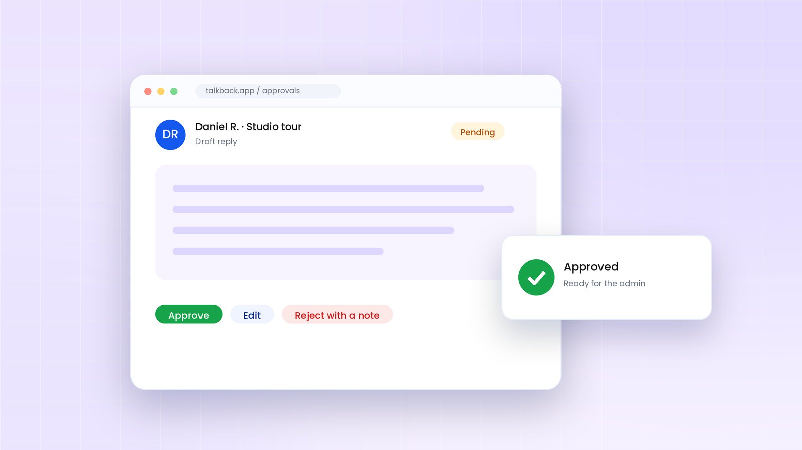
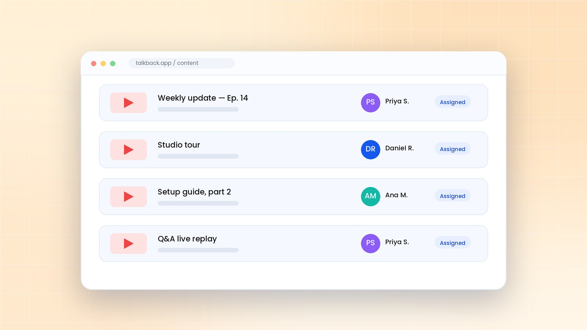
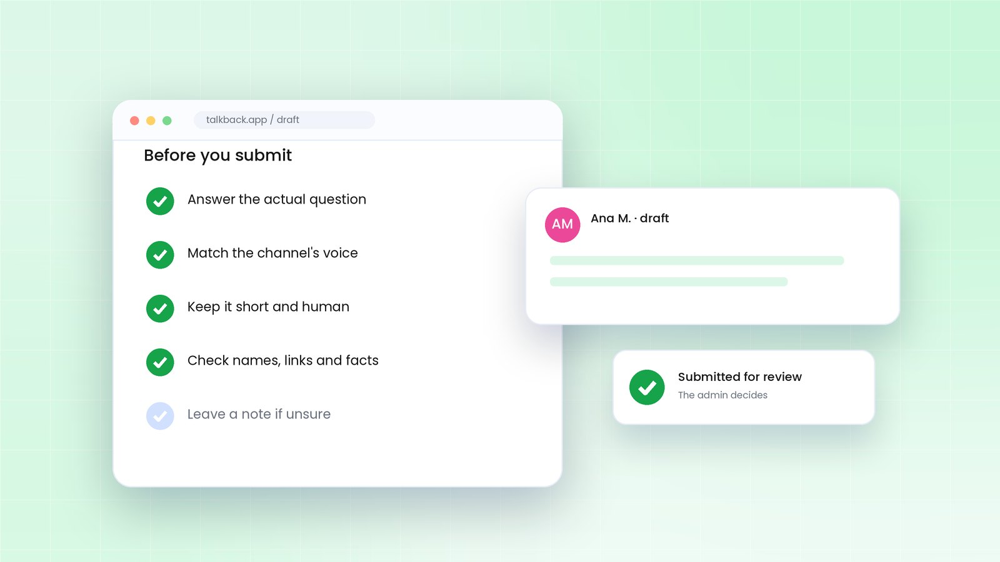

The Talk Back
Journal
Guides, workflows and team tips for answering YouTube comments together, with a person you trust reviewing every reply.

Workflow
Why Every Reply Deserves a Second Look Before It Goes Live
A comment reply is public, permanent and signed with your channel's name. A short review step protects your voice and teaches your team at the same time.

Team tips
Give Every Video an Owner: Assigning Comments That Actually Get Answered
Shared responsibility for comments often means no responsibility. Assigning videos to people is the simplest way to make sure questions get answered.

Guides
A Five-Point Checklist for Better Reply Drafts
Five quick checks every team member can run before submitting a draft, so more replies get approved first time and fewer come back with notes.
No stories in this topic yet.
Put the guides into practice.
Connect your channel, assign the first videos and let your team start drafting. You keep the final say.